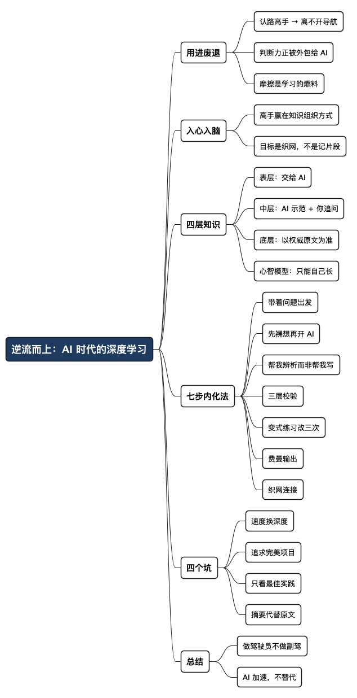

逆流而上：AI 时代程序员的深度学习法
Posted on 四 17 9月 2026 in AI
| Abstract | 逆流而上：AI 时代程序员的深度学习法 |
|---|---|
| Authors | Walter Fan |
| Category | learning note |
| Version | v1.0 |
| Updated | 2026-09-17 |
| License | CC-BY-NC-ND 4.0 |
大纲
展开看看
- 用进废退：从"认路高手"到"离了导航不敢上路"，AI 正在对我们的判断力做同样的事
- "入心入脑"到底是什么：专家和新手的差别不在记得多，而在脑子里有没有一张网
- 四层知识：哪些交给 AI，哪些必须自己长出来
- 七步内化法：用 AI 加速反馈，而不是缩短思考
- 四个坑：速度换深度、追求完美项目、只看最佳实践、拿摘要代替原文
- 总结：做 AI 的驾驶员，不做副驾
我年轻时认路特别厉害。到一个陌生城市，看一眼地图，脑子里就能拼出一张网：这条主干道往东，那个路口右拐是老城区，火车站在西南角。开着车从城东穿到城西，一次不迷。那时候没有导航，全靠脑子。
现在呢？我家方圆十几公里，闭着眼都该熟了，可我出门还是习惯性打开导航。有一次导航没信号，我在一个开了八年的小区门口，愣是想不起来该往哪个岔路走。
那一刻我有点发毛：这不是记性变差了，是脑子里那张"地图"已经不画了。
拉马克两百多年前提出"用进废退"（use and disuse），说的是生物常用的器官会发达，不用的会退化——铁匠的手臂粗，是抡出来的。这套学说后来被达尔文的进化论取代，但拿来形容大脑这块肌肉，倒是精准得很。认路这块肌肉，我把它外包给了导航，它就替我退休了。而现在，我们正在对另一块更值钱的肌肉做同样的事——技术判断力，我们正在把它外包给 AI。
这篇想说的是：AI 拓展了我们的知识边界，这没错；但如果用法不对，它会让你看得懂答案却记不住，能跑通代码却换个场景就抓瞎，会调 AI 却判断不了 AI 对不对。这不是自律问题，是学习方式被 AI 悄悄改掉了。下面讲讲我怎么"逆流而上"。
摩擦是学习的燃料，AI 恰好消灭了摩擦
先说个反直觉的判断：学习需要一点"卡壳"，而 AI 最擅长的就是让你不卡壳。
你想想以前是怎么学会一个东西的。查资料查半天没找对，翻文档翻到眼花，写代码写崩三回，半夜对着一个报错死磕——难受，但正是这些难受的地方，逼着你的脑子真正动起来。等你终于弄明白，那个知识就长在你身上了。
心理学里有个说法叫"合意困难"（desirable difficulty，可以理解成"有益的麻烦"）：主动回忆、间隔复习、把不同类型的题混着练——这些让学习过程"变难"一点的手段，恰恰是让记忆变牢、能举一反三的关键。
AI 把这些麻烦全给你抹平了。你问一句，它秒回一段打磨好的代码，注释齐全，逻辑通顺。爽是真爽。但爽的代价是：你产生了"我懂了"的幻觉，其实只是"我看过了"。就像刷短视频，一条条滑过去，看的时候津津有味，关了 App 一条也想不起来。
AI 消灭了摩擦，但摩擦是学习的燃料。
"入心入脑"到底是什么
我们常说一个知识要"入心入脑"，这话听着玄，其实认知科学早就讲清楚了：把外部信息经过质疑、动手、犯错、复盘、和已有知识挂钩，转成脑子里那种能随时调出来、能拼装、能迁移到新场景的东西。
写了大半辈子代码，我越来越信一个观察：高手和新手的差别，不在于谁记得的知识点多，而在于脑子里知识是怎么组织的。
有个经典实验：让专家和新手给一堆编程问题分类。新手按表面特征分——"这题有循环""那题有递归"；专家按底层结构分——"这是动态规划""那是分治"。专家早就把成堆的实现细节压缩成了几个有意义的概念块，新手还在一行一行啃代码。
所以学习真正的目标，不是"多记几段代码片段"，而是在脑子里织一张网——把琐碎的实现细节，压缩成有意义的抽象。AI 能帮你飞快地把信息搬到眼前，但没法替你完成这个"内化"的过程。就像听有声书救不了你写不出文章一样——听进去的，和你能组织出来的，是两码事。
四层知识：哪些交给 AI，哪些自己长
不是所有知识都值得你花力气死磕。我把技术知识分成四层，AI 在每一层能帮的忙完全不同。
| 知识层级 | 举例 | AI 的角色 | 你必须做的 |
|---|---|---|---|
| 表层 | 函数名、参数、语法、命令行选项、模板代码 | 直接交给 AI | 知道去哪找、怎么校验 |
| 中层 | 设计模式、编码规范、库的典型用法、基础算法 | 能示范，但你要追问 | 逼问"为什么选这个？代价是什么？" |
| 底层 | 内存模型、并发、网络协议、调度、复杂度、分布式 | 能解释，但常讲错 | 以权威原文为准，AI 只做辅助 |
| 心智模型 | 何时选什么架构、何时妥协、风险在哪、怎么拆需求 | 生成不了 | 靠实战、踩坑、复盘自己长 |
展开说几句：
表层——存手机里就行。函数名、参数、语法这些，跟电话号码一样，没人要求你背下来。你要的是"知道去哪找、怎么让 AI 生成、怎么验它对不对"。这层交给 AI，一点心理负担都别有。
中层——AI 能示范，但你必须追问。设计模式、库的用法，AI 写得出教科书级的示例。但如果你不追一句"为什么用这个而不是那个？trade-off 在哪？边界在哪？"，你拿到的只是能跑的样板，不是能迁移的理解。主动问"为什么这样是对的"并自己讲一遍，理解深度完全不一样。
底层——AI 能解释，但经常讲错或过度简化。内存模型、并发、网络协议这些，是你判断 AI 答案对错的地基。没有这层功底，你识别不出 AI 的幻觉——它说得那么流畅自信，可能在最关键的细节上彻底搞反。对这一层，权威来源永远优先于 AI：RFC、官方规范、经典论文、知名开源项目的源码。Martin Fowler 说得很直白：AI 引入了强大的新抽象层，但正因为如此，理解设计、抽象、测试和问题本身，变得更重要，而不是更不重要。
心智模型——AI 长不出来，只能你自己长。什么时候该上这个架构、什么时候该妥协、系统哪里最容易崩、模糊的需求怎么拆、性能成本可维护性怎么权衡——这些没有标准答案，全是权衡。AI 给不了你，只能靠深度思考、项目实战、踩坑复盘，一点点长出来。
一句话概括：AI 做检索和草稿，人脑做选择、验证、推理、建模。
七步内化法：用 AI 加速反馈，不是缩短思考
普通人的学习路径是这样的：搜资料 → 看 AI 答案 → 复制运行 → 完事。判断力就是这么一步步被外包掉的。
下面这套流程的核心就一句话：用 AI 加速反馈循环，而不是缩短思考过程。
1. 带着问题出发。没有问题的学习，大脑根本不启动"深度记忆"这个开关。别说"我今天学 Rust"，把它变成一个能回答的问题：Rust 的所有权到底解决了 C++ 的什么痛点？付出了什么代价？大脑记住的不是孤立的知识点，是"问题—答案—约束"这个三元组。
2. 先裸想 5 到 15 分钟，不许开 AI。绝大多数人跳过这一步，但它是点火开关。哪怕你只是瞎猜、画草图、列几个"我不确定的地方"，你的脑子已经建立了预期。等看到答案时，你不是被动接收，而是在验证和修正自己的猜想。没有这步预思考，AI 的完美方案会像短视频一样从你眼前滑过去。
3. 提示词从"帮我写"改成"帮我辨析"。这是最关键的一步。
低价值提示：
帮我写一个 Go 的并发队列
得到一段代码，复制走人，脑子全程没参与。
高价值提示：
列出三种实现并发安全队列的思路，各自的优缺点、适用场景、性能取舍。给出每种的最简实现，标出风险点和边界条件。再指出 AI 在这类问题上经常犯的典型错误。
前者只停在"抄一段能用的"，后者逼着你去分析、评估、比较。把 AI 当成百科全书 + 助教 + 反例生成器 + 辩论对手，跟它博弈，别让它当替你搬砖的代码工人。
我自己有个默认习惯：凡是 AI 给的代码，先假设它有 bug、有简化、有忽略的边界、有藏着的性能陷阱。先找漏洞，再谈用。
4. 三层校验。AI 经常"理论正确、忽略边界、理想化环境、编造 API、省略异常处理"。"看起来对"远远不够，得过三关：
- 逻辑推演：不运行，在脑子里拿几个典型输入和极端输入走一遍。会不会死锁？会不会数据竞争？
- 最小可运行验证：搭个最小 demo，测正常路径、边界路径、错误路径。
- 破坏测试：主动制造异常——超时、断网、高并发、内存紧张，看它是不是真扛得住。
这里有个绝妙的类比。航空业早就发现：自动驾驶表现完美的时候，飞行员会松懈；一旦系统出故障，飞行员因为长期不手动操作，反而接不住。程序员面对 AI 生成的代码，处境一模一样。找 AI 的漏洞，本身就是深度学习的过程。
5. 变式练习——跑通原版后，至少改三次。只运行原样代码，脑子记住的是一个僵死的模板。迁移能力来自变化。三个方向：收紧约束（降内存、压延迟、去掉顺手的库，用更底层的方式重写）；放宽约束（单机改多机，单线程改多线程，加容错）；反向破坏（故意去掉一个锁、一个校验、一个重试，观察它怎么崩——这样你才真懂这个机制为什么存在，而不只是知道它存在）。
6. 费曼输出——讲不清楚的地方，就是你没学会的地方。这一条是这些年对我最管用的。
标准很简单：你能不能给一个懂基础、但不懂这个专题的人讲明白，还不靠术语堆砌？
写了十几年代码，回头看，真正让知识留在我身上的，从来不是"看过""收藏过"，而是动过手、出过错、讲给别人听过的那些。
学一个协议，光看 RFC 觉得字字都认识，真到自己用文字把流程写一遍、画一张示意图，才发现有三个环节根本说不清。学一个框架，跑通官方 demo 觉得不难，等自己写份讲义、做个 PPT 给组里分享，才发现对一半 API 的理解是错的。
陆游那句"纸上得来终觉浅，绝知此事要躬行"，放到技术学习里就是：写下来、画出来、讲出来、用起来，缺一不可。用自己的话重新组织一遍——不是复述 AI 的句子，是嚼碎了咽下去再吐出自己的版本——这个过程就是大脑在建新连接。
这不是什么高深方法论，就是笨功夫。但这些年看下来，坚持做这个的人，技术判断力和不做的人越拉越开。AI 时代这个差距只会更大——因为 AI 让"看过"的成本趋近于零，可"真懂"的门槛一分没降。
7. 织网——把知识点连成网络。零散的知识点最容易忘。每学一个新东西，做三个关联：横向对比（和已经掌握的比，Rust 所有权 vs C++ RAII，Go channel vs Erlang actor）；纵向溯源（它解决的问题，以前有哪些方案？为什么不够？）；前向延伸（它会引出哪些新问题？代价是什么？）。日积月累，你脑子里就不是一堆代码片段，而是一张带着权衡关系的技术地图——就像我年轻时脑子里那张城市地图。
四个最常见的坑
坑 1：用速度替代深度。中等难度的问题也直接甩给 AI，短期高效，长期大脑不再练长链条推理。解药：简单问题直接问 AI；中等问题先自己想 10 分钟；硬核问题先啃资料画模型，AI 留到最后答疑。
坑 2：追求 AI 一把梭出的完美项目，不拆解不溯源。让 AI 直接给你生成一整套分布式系统，你是它的使用者，不是理解者。解药：从最小原型往上搭——先做信令，再加 ICE，再加媒体收发，每一层都可控可改。
坑 3：只看最佳实践，看不到历史和取舍。AI 擅长给标准答案，却省略了当年为什么这么设计、失败过哪些路线、什么条件下"最佳实践"不再最佳。解药：主动追问适用边界、反例、替代方案、被淘汰的理由。
坑 4：用 AI 摘要代替权威原文。AI 做平滑简化会丢掉严谨性，有时还把简化当事实。底层原理、协议标准、安全机制、高性能领域——RFC、官方规范、论文、源码的优先级永远高于 AI。让 AI 帮你啃难懂的文档没问题，但不能替代你对原文的校验。
几个可持续的习惯
方法论说再多，不落到习惯上都是空的。我给自己定了几条，供你参考：
- 每天一个深度时段（60–90 分钟）：关掉 AI，只开文档、IDE 和纸笔，啃一个硬核点。不求量大，求连续思考不被打断。
- 每周一个"反 AI 项目"：小主题，AI 只用来答疑和提示方向，最终实现自己推。这是检验你到底懂没懂的试金石。
- 每周一次费曼输出：笔记、架构图、讲解录音都行，重点是暴露自己不懂的地方，然后针对性补。
- 一个工程师错题本：记"我哪里理解错了""AI 哪里错了""哪个边界条件忽略了""为什么踩了这个坑"，隔段时间回看。这比收藏一堆漂亮 demo 管用得多。
总结：做 AI 的驾驶员，不做副驾
最好的飞行员，不是自动驾驶下最省事的那个，而是即使有了自动驾驶，仍然保持手动飞行能力和情境判断力的那个。
AI 时代好工程师的标志，不是写代码更快，而是判断一个方案（包括 AI 给的）对不对、风险在哪、代价多大、能不能落地，判断得更快、更准。这种判断力，只能靠深度思考、刻意练习、系统复盘一点点锻造出来。AI 能让反馈循环更快，但不能让你的思考更浅。
回到开头那个在小区门口犯迷糊的我。导航没错，导航很好用；错的是我把认路这件事整个交了出去，连脑子里画地图的习惯都丢了。AI 也一样——用它加速，别用它替代。方向盘，得握在自己手里。
老子在《道德经》里讲"为学日益，为道日损"：做学问是往上加，一天懂一点；求道是往下减，把东西嚼碎、扔掉冗余，剩下真正长在身上的。这话放到今天格外应景——AI 让"为学"这件事快到极致，信息唾手可得，日益再日益；可"为道"——把信息炼成判断力和心智模型——依然得靠你自己损之又损，一点走不了捷径。两个方向，一个 AI 全包，一个谁也替不了你。
遇题先独研，凡答皆存嫌；
拆而改之验，讲清方为坚；
织点连成面，存图不贪全；
机器供驱使，人执舵在前。
全文思维导图
@startmindmap
<style>
mindmapDiagram {
node {
BackgroundColor #F8F9FA
RoundCorner 10
Padding 10
FontSize 13
}
:depth(0) {
BackgroundColor #1E3A5F
FontColor white
FontSize 18
FontStyle bold
}
:depth(1) {
FontSize 15
FontStyle bold
}
:depth(2) {
FontSize 13
}
}
</style>
* 逆流而上：AI 时代的深度学习
** 用进废退
*** 认路高手 → 离不开导航
*** 判断力正被外包给 AI
*** 摩擦是学习的燃料
** 入心入脑
*** 高手赢在知识组织方式
*** 目标是织网，不是记片段
** 四层知识
*** 表层：交给 AI
*** 中层：AI 示范 + 你追问
*** 底层：以权威原文为准
*** 心智模型：只能自己长
** 七步内化法
*** 带着问题出发
*** 先裸想再开 AI
*** 帮我辨析而非帮我写
*** 三层校验
*** 变式练习改三次
*** 费曼输出
*** 织网连接
** 四个坑
*** 速度换深度
*** 追求完美项目
*** 只看最佳实践
*** 摘要代替原文
** 总结
*** 做驾驶员不做副驾
*** AI 加速，不替代
@endmindmap

本作品采用知识共享署名-非商业性使用-禁止演绎 4.0 国际许可协议进行许可。 欢迎在我的个人网站 https://www.fanyamin.com 访问原文并评论。